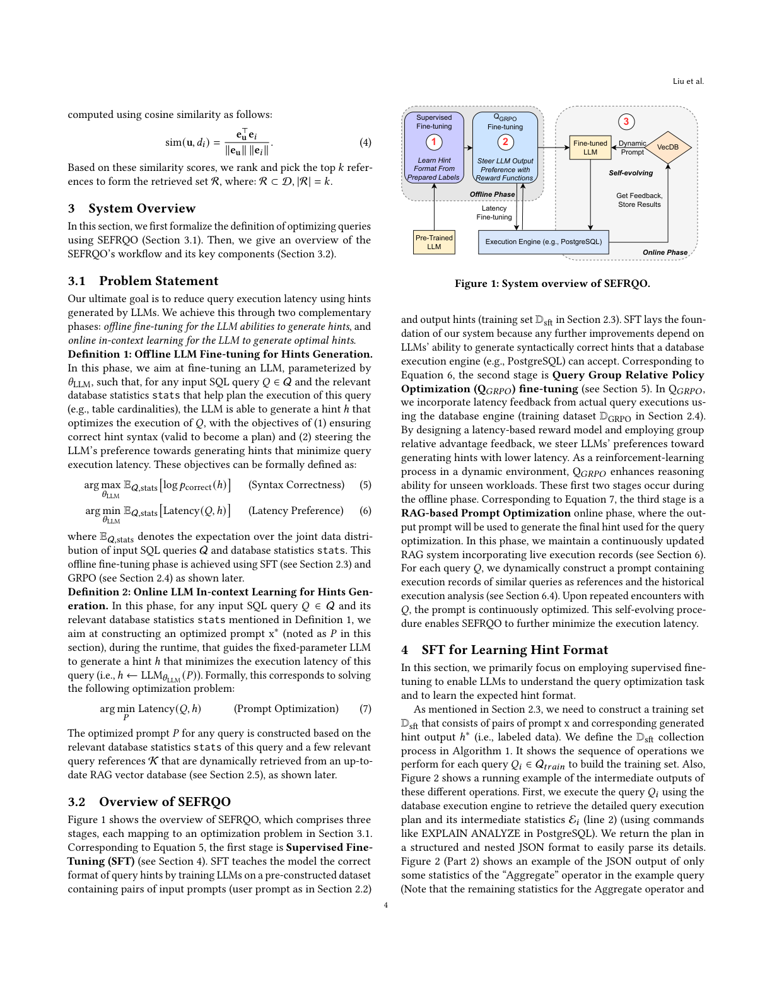
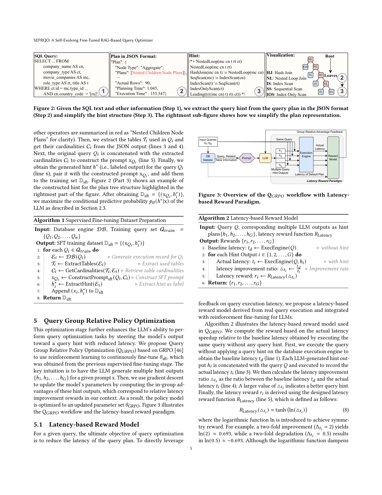
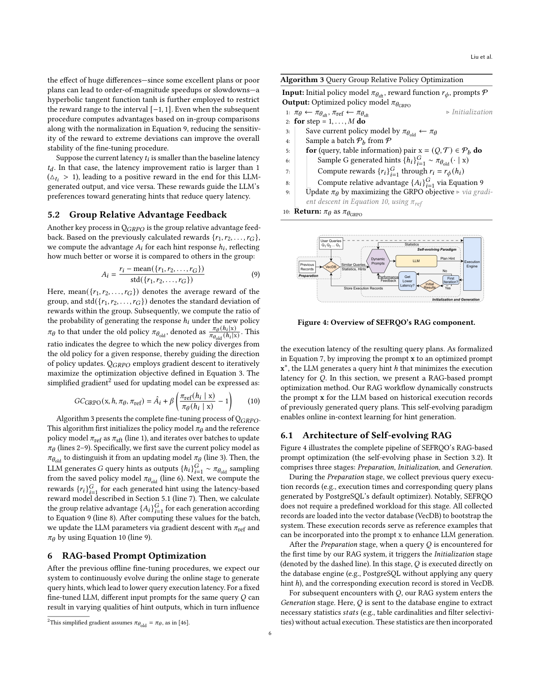
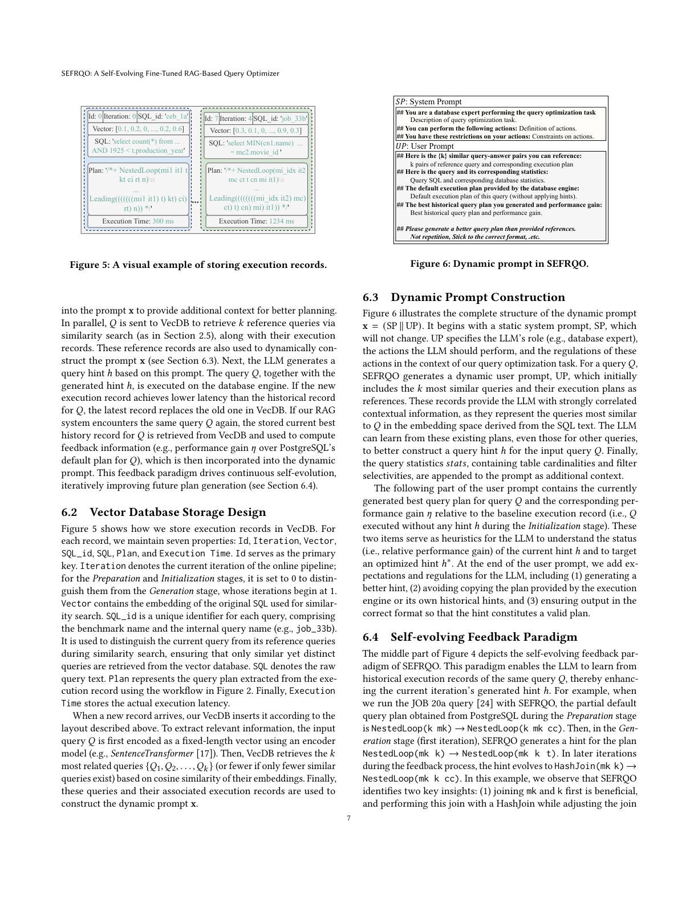
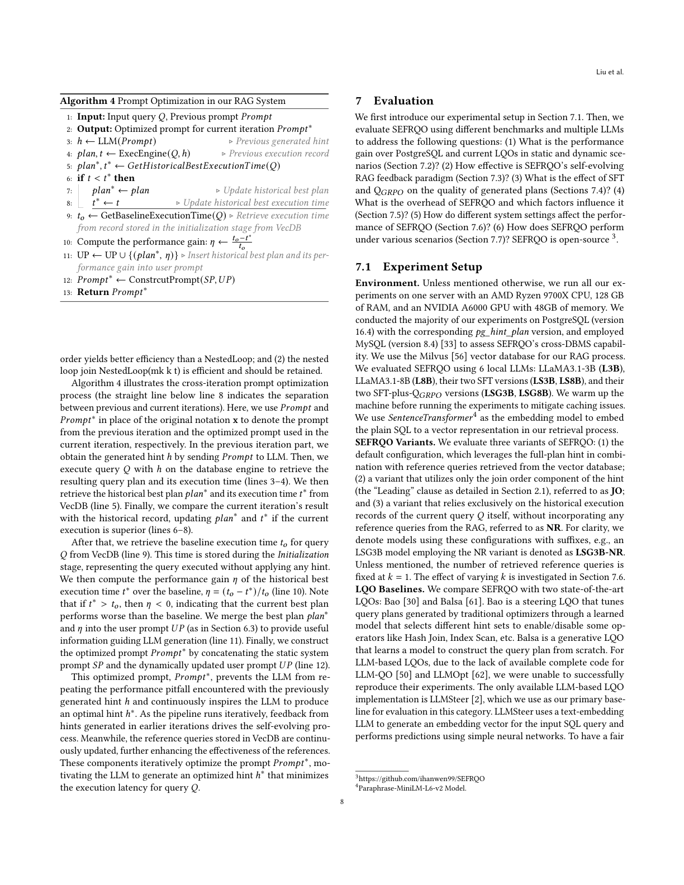
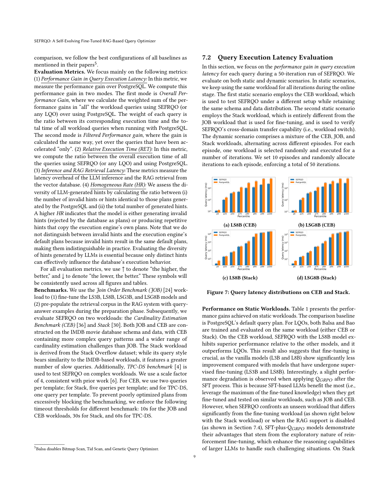
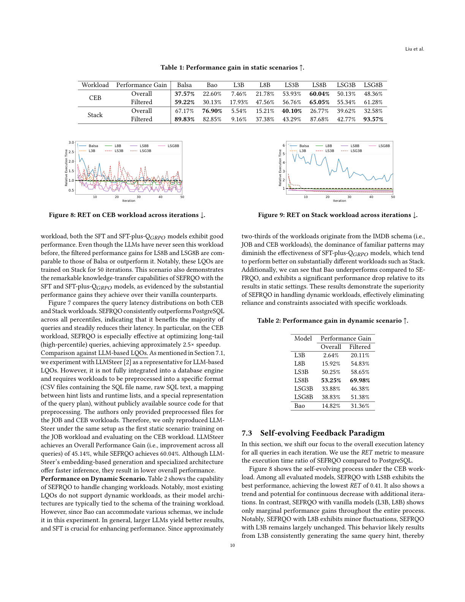
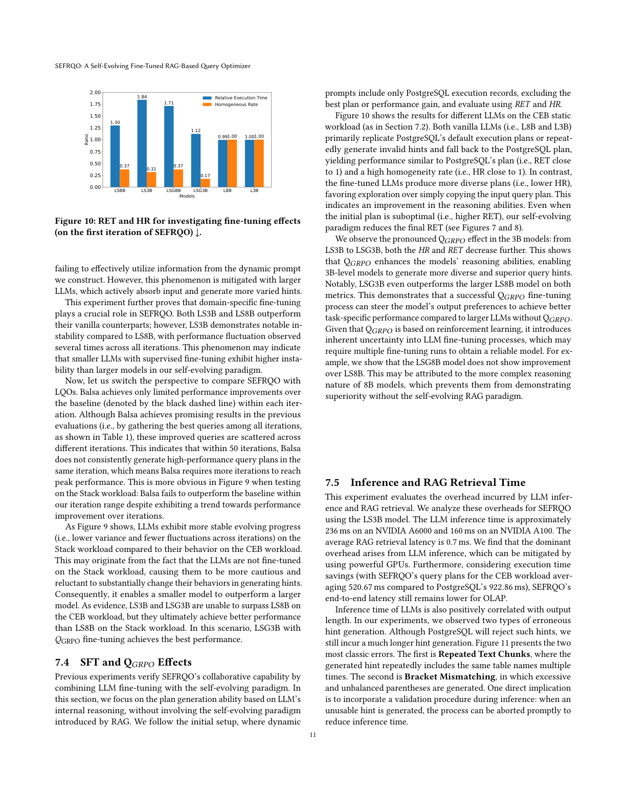
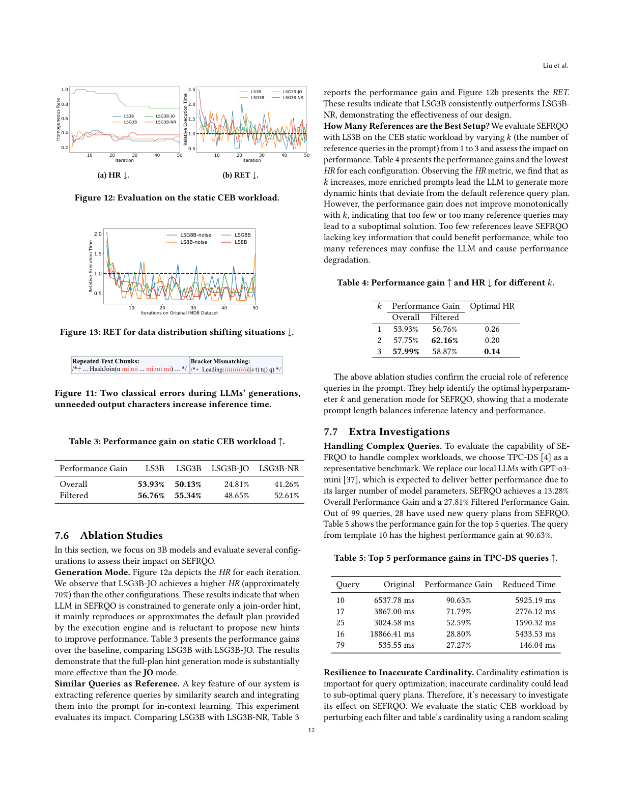

SEFRQO: A Self-Evolving Fine-Tuned RAG-Based Query Optimizer · Hanwen Liu, Qihan Zhang, Ryan Marcus, Ibrahim Sabek · USC / UPenn
查询优化是数据库系统中一个被研究数十年的重要问题。学习型查询优化器（LQO）可通过纳入反馈随时间提升性能，但它们存在冷启动问题，且在工作负载迁移或模式变更时往往需要重训练。近期基于 LLM 的查询优化器利用预训练与微调的 LLM 来缓解这些挑战，却忽视了 LLM 的上下文学习（in-context learning）与执行记录作为持续演化的反馈。本文提出 SEFRQO——一种自演化、微调、基于 RAG 的查询优化器。SEFRQO 通过检索增强生成（RAG）框架持续从执行反馈中学习，缓解了 LQO 的冷启动问题；我们同时采用有监督微调（SFT）与强化微调（RFT）来让 LLM 生成语法正确且性能高效的查询提示（hint）。此外，SEFRQO 借助 LLM 的上下文学习能力，通过动态构建参考相似查询与同一查询历史执行记录的提示，这一自演化范式迭代优化提示以最小化查询执行延迟。评估显示 SEFRQO 优于最先进的 LQO，相比 PostgreSQL 在 CEB 与 Stack 工作负载上分别实现最高 65.05% 与 93.57% 的查询延迟降低。
查询优化是数据库系统中基础且性能关键的问题，聚焦于将声明式用户查询翻译为高效的查询计划。人类专家花费数十年设计改进传统优化器（如 PostgreSQL[40]）。为加速优化器开发并提升查询性能，若干研究将不同技术应用于查询优化，如机器学习[11,30,31,61,63,65,69] 与大语言模型[50,62]。
尽管这些学习型查询优化器（LQO）代表着令人兴奋的工作甚至已有工业落地[68]，我们认为现有 LQO 至多具备以下三项理想特性中的两项：(1) 能从错误中快速主动学习、纳入查询计划反馈；(2) 能立即工作、无需大量训练（即"冷启动"问题）；(3) 能适应模式、工作负载与数据的变化而无需大量人力。例如 Bao[30] 能从错误中学习并适应变化，但需数小时训练数据才具竞争力；Fastgres[59] 无冷启动且能从错误学习，却无法在查询工作负载显著变化时自适应重训练；三个近期应用 LLM 的系统[2,50,62] 将微调 LLM 作为生成或选择计划的预言机，但因微调代价高昂，无法在运行时即时从错误中学习或持续改良。
为何不存在具备全部理想特性的系统？直觉上，不使用 LLM 的 LQO 推理能力偏弱——要么需大量训练数据（导致冷启动），要么假定模式与工作负载固定（导致无法适应）；使用 LLM 的 LQO 能立即工作并适应变化，但用现有技术纠正其错误对 DBMS 关键路径而言代价过高。本文提出 SEFRQO——一个具备全部三项特性的、基于 RAG 的查询优化器。SEFRQO 用 LLM 规避冷启动并适应变化；为从错误中学习，它使用持续更新的、存储过往查询执行的向量数据库作为优化器的"记忆"。SEFRQO 生成基于提示的查询计划来引导经典数据库系统（如 PostgreSQL[40]）的优化器，该提示由 LLM 优化生成。SEFRQO 依赖两个互补阶段优化提示生成过程：离线 LLM 微调与在线 LLM 上下文学习。鉴于这些技术开销高于传统优化器，SEFRQO 面向长耗时 OLAP 查询（性能收益可抵消优化开销）。
为准备能生成格式正确且高效查询提示的微调 LLM，SEFRQO 采用 SFT[14] 与 RFT[57] 结合的技术。SFT 教 LLM 期望的提示格式；RFT 方面，我们提出高效的 Query Group Relative Policy Optimization（QGRPO），基于 GRPO[46]，将 LLM 输出偏好导向能降低查询执行延迟的提示。QGRPO 定义基于延迟的奖励模型，与数据库执行引擎交互直接测量生成提示的相应延迟；并在为同一查询生成的多个提示间做组内比较，免去如 DPO[50] 那样额外标注数据集的需要。通过不依赖有限标注数据集，QGRPO 的微调鼓励 LLM 自我探索，进一步激发其推理与泛化能力以处理未见工作负载或迁移的模式。
SEFRQO 的另一关键创新在于利用在线 LLM 基于 RAG 的上下文学习——LLM 通过条件化于少量检索并在输入上下文中直接提供的相关 RAG 示例（即提示）来适应新任务，而无需修改模型参数。为使该方法最有效，检索示例需与目标查询高度对齐，为此 SEFRQO 构建并维护一个存储最相关查询执行记录的专用向量数据库。此外，SEFRQO 引入自演化反馈范式，使 LLM 能从同一查询的历史执行记录中学习——SEFRQO 生成的历史最优计划及其相对基线性能增益提供额外上下文，这些组件迭代优化提示，激励 LLM 生成最小化执行延迟的优化提示。
实验表明 SEFRQO 持续优于 PostgreSQL 与两个最先进 LQO（Bao[30]、Balsa[61]），基于 JOB[24]、CEB[36]、Stack[30]、TPC-DS[4] 四个工作负载。在 CEB 上相对 PostgreSQL 降低 65.05% 执行时间；在 Stack 上某些查询降低达 93.57%、整体 40.10%；在 TPC-DS 上降低 13.28%。借助动态提示与自演化范式及成功微调，SEFRQO 在未见过的 Stack 工作负载上展现出惊人的跨域能力，甚至在某些指标上超过直接在该负载上训练的 LQO；还支持当前 LQO 难以应对的灵活工作负载迁移与跨 DBMS 场景（在 MySQL 上无需额外微调即降低 26.28% 执行时间）。贡献总结如下：
LLM 是基于 Transformer[16]、具数十亿参数、在广泛任务上泛化良好的模型。预训练阶段从海量语料学习通用理解能力；我们借助 LLM 生成基于提示的查询计划，并通过微调与基于 RAG 的提示流程使之适配该任务。下面先介绍提示式查询优化（2.1 节）、LLM 生成过程（2.2 节），再概述 SFT（2.3 节）、RFT（2.4 节）两大微调范式，以及所用的 RAG 检索流程（2.5 节）。
提示式计划生成是许多 LQO（如[61,69]）常用方法。集成 PostgreSQL[41] 的 LQO 用 pg_hint_plan[38] 在 SQL 注释中嵌入"提示"以调整执行计划，支持连接顺序模式（简单模式）与完整计划模式（完全模式）。简单模式中提示以 Leading 子句指定连接顺序，如 Leading(a (b c)) 表示先 b⊲⊳c 再 a⊲⊳(b⊲⊳c)；完整模式还传达表扫描类型（IndexScan、SeqScan）与表间连接类型（HashJoin、NestedLoop）。提示被优化器接受后即转为查询计划用于实际执行。本文两种模式均使用。
提示是与 LLM 交互的文本，可含定义角色/上下文的 System Prompt 与指定任务/问题的 User Prompt。tokenizer 将原始文本分词并映射为整数序列，LLM 以自回归方式基于下一 token 预测生成响应序列。设输入序列 x 送入参数 θ 的 LLM，输出 token 序列 y=[y₁,…,y_T]，生成过程可表示为概率 p_θ(y|x) 分解为各 token 条件概率之积：
本文为简洁将 token 层面隐去，用 x 表示提示、h 表示生成的提示（hint）。
SFT[14] 通过在高质量标注数据上训练调整 LLM 参数以增强特定任务能力。在提示式计划生成任务中，需构建由提示 x 与对应预生成提示输出 h* 组成的数据集 D_sft（细节见第 4 节）；SFT 通过最小化负对数似然的期望来最大化条件预测概率 p_θ(h*|x)：
经 SFT 后，LLM 应熟悉任务，即学会查询提示输出的格式与生成高效计划的内在逻辑。
RFT 用强化学习更新 LLM 参数以增强特定能力，在 SFT 后进一步提升推理能力（如[57]）。RFT 算法有 PPO[45]、DPO[42] 与 GRPO[46]。PPO 依赖训练好的价值模型判断输出优劣，引入额外内存与计算开销；DPO 去除独立价值模型却需要配对偏好数据，构建该数据集带来额外标注负担，且可能降低生成偏好的绝对似然[39]。我们采用 GRPO[46]——PPO 变体，通过组内比较消除显式价值模型与标注数据需求：对同一提示生成多个输出，依用户定义奖励函数计算奖励，再评估组内优势 Â。GRPO 固定当前策略模型 π_θ^old，对每个提示 x 基于 π_θ^old 生成 G 个提示计划 {h₁,…,h_G}，执行后以其执行延迟通过最大化以下目标来优化策略模型 π_θ：
其中 f 与超参 ε 用于稳定微调[45]，KL 散度正则项（超参 β 加权）防止更新后策略 π_θ 过度偏离参考策略 π_ref。
RAG[49] 通过从向量数据库[56] 检索外部知识增强 LLM，无需改动模型权重即可补充提示相关信息。给定参考查询集合 D={d₁,…,d_N}，每个 d_i 用编码器 φ(·) 映射为 m 维嵌入 e_i=φ(d_i)∈ℝ^m，所有嵌入组成矩阵 E=[e₁,…,e_N]∈ℝ^{m×N}；对查询 u 计算嵌入 e_u=φ(u)∈ℝ^m，用余弦相似度计算 u 与 d_i 的相似度：
基于相似度排序取前 k 个参考组成检索集 R⊂D（|R|=k）。
先形式化 SEFRQO 优化查询的定义（3.1 节），再概述其工作流与关键组件（3.2 节）。
最终目标是通过 LLM 生成的提示降低查询执行延迟，通过两个互补阶段实现：离线微调（使 LLM 具备生成提示能力）与在线上下文学习（使 LLM 生成最优提示）。
该优化提示基于查询相关数据库统计与从最新 RAG 向量库动态检索的少量相关查询参考 K 构建。
图 1 展示 SEFRQO 概览，包含三个阶段，分别映射 3.1 节中的优化问题。对应式 (5) 的第一阶段是 SFT（第 4 节）：在包含输入提示与输出提示的预构建数据集上训练 LLM，教其正确的提示格式（SFT 是整个系统的基础，因后续改进都依赖 LLM 生成数据库引擎可接受的语法正确提示）。对应式 (6) 的第二阶段是 QGRPO 微调（第 5 节）：用数据库引擎的实际查询执行延迟反馈，通过基于延迟的奖励模型与组内相对优势反馈将 LLM 偏好导向更低延迟的提示，作为动态环境中的强化学习过程增强未见工作负载的推理能力（前两个阶段属离线）。对应式 (7) 的第三阶段是基于 RAG 的提示优化在线阶段：维护持续更新的 RAG 系统（含实时执行记录，第 6 节），为每个查询 Q 动态构建含相似查询执行记录参考与历史执行分析的提示；在反复遇到 Q 时提示被持续优化，这一自演化过程使 SEFRQO 进一步最小化执行延迟。

本节用 SFT 使 LLM 理解查询优化任务并学习期望的提示格式。如 2.3 节，需构建由提示 x 与对应生成提示 h*（标注数据）组成的训练集 D_sft，算法 1 给出收集过程：对每个训练查询 Q_i，先用执行引擎获取详细执行计划与中间统计 E_i（第 2 行，如 EXPLAIN ANALYZE），以结构化嵌套 JSON 返回；提取所用表 T_i 与其基数 C_i（第 3–4 行）；将原数查询 Q_i 与 C_i 拼接构造提示 x_{Q_i}（第 5 行）；获得标注提示 h*_i（第 6 行），与 x_{Q_i} 配对加入 D_sft（第 7 行）。图 2 给出中间输出的运行示例（含 SQL、从 JSON 提取的提示、简化提示结构）。获得 D_sft 后，依 2.3 节最大化 LLM 的条件预测概率 p_θ(h*|x)。

该阶段通过强化学习持续微调 θ_sft（来自 SFT 阶段），将模型输出导向更低延迟的提示。核心思路：对给定提示 x，让 LLM 生成多个提示输出 {h₁,…,h_G}，再用梯度下降依据这些输出的组内优势（对应相对延迟改进奖励）更新参数，得到优化后的 θ_GRPO。图 3 展示 QGRPO 工作流与基于延迟的奖励范式。
查询优化的最终目标是降低查询计划延迟。算法 2 给出 QGRPO 中基于延迟的奖励模型：先计算无提示执行查询的基线延迟 t_d（第 1 行），对每个 LLM 生成提示 h_i 拼接查询执行得到实际延迟 t_i（第 3 行），计算延迟改进比 Δt_i = t_d / t_i（第 4 行），再以延迟奖励函数 R_Latency(Δt_i) 得到奖励 r_i（第 5 行）。奖励函数定义为：
其中 ln 引入对称性（两倍的改进 Δt_i=2 得 ln(2)≈0.693；两倍的退化 Δt_i=0.5 得 ln(0.5)≈−0.693），再用 tanh 将奖励限制在 [−1,1]，降低对极端偏差的敏感性以稳定微调。当 t_i < t_d 时 Δt_i>1，得正奖励，反之负奖励，从而引导 LLM 偏好降低延迟的提示。
基于已计算的奖励 {r₁,…,r_G}，计算每个提示响应 h_i 的优势 A_i，反映其相对组内其他响应的优劣：
其中 mean 为组内平均奖励，std 为标准差。再计算新策略 π_θ 与旧策略 π_θ^old 下生成 h_i 的概率比 π_θ(h_i|x)/π_θ^old(h_i|x)，指示新策略偏离旧策略的程度以引导更新方向。QGRPO 用梯度下降迭代最大化式 (3) 目标，简化梯度为：
算法 3 给出 QGRPO 完整微调过程：初始化 π_θ 与 π_ref 为 π_sft（第 1 行），迭代 M 步（第 2–9 行），每步保存当前策略为 π_θ^old（第 3 行），从 π_θ^old 采样 G 个提示（第 6 行），用 5.1 节奖励模型算奖励（第 7 行），按式 (9) 算组内相对优势（第 8 行），最后用式 (10) 经梯度下降更新 π_θ（第 9 行）。

离线微调后，SEFRQO 期望在在线阶段持续演化生成更低延迟的提示。对固定微调 LLM，同一查询 Q 的不同输入提示会导致不同质量的提示输出，进而影响执行延迟（如式 (7) 所述）。本节提出基于 RAG 的提示优化方法：基于历史执行记录动态构建提示 x，使在线上下文学习得以实现。
图 4 展示 SEFRQO 基于 RAG 的提示优化完整流程（3.2 节的自演化阶段），包含准备（Preparation）、初始化（Initialization）、生成（Generation）三阶段。准备阶段收集过往查询执行记录（如 PostgreSQL 默认优化器的执行时间与计划）载入向量数据库（VecDB）引导系统——无需预定义工作负载。当 RAG 首次遇到查询 Q，触发初始化阶段：Q 直接在数据库引擎执行（不施加提示 h），相应执行记录存入 VecDB。后续再遇 Q 进入生成阶段：Q 送数据库引擎提取必要统计 stats（不实际执行），并行送 VecDB 经相似度检索 k 个参考查询及其执行记录，与统计一同动态构建提示 x；LLM 据此生成提示 h，Q 与 h 一并执行，若新记录延迟低于 Q 的历史记录则替换 VecDB 中旧记录；再遇 Q 时检索其当前最佳历史记录计算反馈信息（如相对 PostgreSQL 默认计划的性能增益 η）融入动态提示，驱动持续自演化。
图 5 展示 VecDB 中执行记录的存储方式，每条记录维护七个属性：Id（主键）、Iteration（在线流水线当前迭代，准备/初始化阶段为 0，生成阶段从 1 起）、Vector（原始 SQL 的嵌入，用于相似度搜索）、SQL_id（基准名+内部查询名，如 job_33b，用于区分当前查询与参考查询）、SQL（原始查询文本）、Plan（从执行记录提取的计划）、Execution Time（实际执行延迟）。新记录到达时按上述布局插入；输入查询 Q 先用编码器（如 SentenceTransformer[17]）编码为定长向量，VecDB 基于余弦相似度检索 k 个最相关查询，与关联执行记录一起构造动态提示 x。

图 6 展示动态提示 x=(SP∥UP) 的完整结构：静态 System Prompt（SP）不变，定义 LLM 角色（如数据库专家）、可执行动作与动作约束；动态 User Prompt（UP）初始包含 k 个最相似查询及其执行计划作为参考（提供强相关上下文），并追加含表基数与过滤选择性的查询统计 stats 作为额外上下文。UP 后续部分包含当前为 Q 生成的最佳查询计划及其相对基线执行记录的增益 η，作为启发式信息帮助 LLM 理解当前提示 h 状态并瞄准优化提示 h*。UP 末尾加入对 LLM 的期望与约束：生成更好提示、避免复制执行引擎或自身历史提示、确保输出为正确格式。
图 4 中部展示自演化反馈范式，使 LLM 能从同一查询 Q 的历史执行记录学习以增强当前迭代生成的提示 h。以 JOB 20a 查询为例：准备阶段 PostgreSQL 默认计划为 NestedLoop(k mk)→NestedLoop(k mk cc)；生成阶段（第一次迭代）SEFRQO 生成 NestedLoop(mk k)→NestedLoop(mk k t)；后续反馈迭代中演化为 HashJoin(mk k)→NestedLoop(mk k cc)——SEFRQO 识别出两点：(1) 先连接 mk 与 k 有益且用 HashJoin 比 NestedLoop 更高效；(2) NestedLoop(mk k t) 高效应保留。算法 4 给出跨迭代提示优化过程：用上一迭代提示 Prompt 得历史提示 h（第 3 行）与执行记录 plan、t（第 4 行），从 VecDB 取历史最佳 plan*、t*（第 5 行），若当前更优则更新（第 6–8 行）；从 VecDB 取基线执行时间 t_o（第 9 行），算性能增益 η=(t_o−t*)/t_o（第 10 行，若 t*>t_o 则 η<0 表示劣于基线），将 plan* 与 η 并入 UP（第 11 行），构造优化提示 Prompt*（第 12 行）。该优化提示防止 LLM 重复历史提示的性能陷阱，激励生成最优提示 h*；随流水线迭代，早期提示反馈驱动自演化，VecDB 中参考查询也持续更新。

先介绍实验设置（7.1 节），再用不同基准与多个 LLM 回答：(1) 静态/动态场景下相对 PostgreSQL 与当前 LQO 的性能增益（7.2 节）；(2) 自演化 RAG 反馈范式的有效性（7.3 节）；(3) SFT 与 QGRPO 对生成计划质量的影响（7.4 节）；(4) SEFRQO 的开销及影响因素（7.5 节）；(5) 不同系统设置的影响（7.6 节）；(6) 多种场景下的表现（7.7 节）。
环境。 单服务器（AMD Ryzen 9700X、128GB 内存、NVIDIA A6000 48GB），PostgreSQL 16.4 + pg_hint_plan，并用 MySQL 8.4 评估跨 DBMS 能力，Milvus[56] 作 RAG 向量库。评估 6 个本地 LLM：LLaMA3.1-3B(L3B)、8B(L8B) 及其 SFT 版(LS3B、LS8B) 与 SFT+QGRPO 版(LSG3B、LSG8B)；用 SentenceTransformer（Paraphrase-MiniLM-L6-v2）作嵌入模型。
SEFRQO 变体。 (1) 默认配置：full-plan 提示 + 从向量库检索的参考查询；(2) 仅连接顺序提示（Leading 子句，记为 JO）；(3) 仅用当前查询 Q 自身历史执行记录、不引入 RAG 参考查询（记为 NR）。默认检索参考数 k=1。
LQO 基线。 对比 Bao[30]（steering 类，选择不同提示集启停算子）与 Balsa[61]（generative 类，从零构建计划）；LLM 类因 LLM-QO[50]、LLMOpt[62] 代码不可用，仅以 LLMSteer[2] 为主要基线。
评估指标。 (1) 查询执行延迟性能增益：Overall（所有查询加权增益）与 Filtered（仅被加速查询的加权增益）；(2) 相对执行时间 RET（SEFRQO 与 PostgreSQL 总执行时间之比，↓ 越好）；(3) 推理与 RAG 检索延迟；(4) 同质率 HR（无效提示或与 PostgreSQL 默认计划相同的提示占比，↑ 表示越差）。用 ↑ 表示越高越好、↓ 表示越低越好。
基准。 用 JOB 微调 LS3B/LS8B/LSG3B/LSG8B 并预填充 RAG 语料；在 CEB（IMDB 上更复杂）与 Stack（Stack Overflow，慢查询更多）上评估；TPC-DS（scale factor=4）测试复杂负载。超时阈值：JOB/CEB 10s、Stack 30s、TPC-DS 60s。
在 SEFRQO 的 50 次迭代运行中评估每查询的延迟增益，分静态（同负载不变）与动态（CEB/JOB/Stack 混合交替）场景。静态含 CEB（同模式同分布、不同设置）与 Stack（与微调 JOB 完全不同、验证跨域迁移）。


与基于 LLM 的 LQO 对比。 以 LLMSteer[2] 为代表性基线（仅复现 JOB 训练、CEB 评估），其 Overall 增益 45.14%，SEFRQO 达 60.04%，尽管 LLMSteer 推理更快但整体性能更低。
动态场景。 表 2 显示 SEFRQO 处理变化工作负载的能力（多数 LQO 因架构绑定训练负载模式而不支持动态负载，仅 Bao 可纳入）。更大 LLM 结果更好、SFT 关键；Bao 表现不及 SEFRQO 且在动态下较静态明显退步。SEFRQO 消除了对特定工作负载的依赖与约束。
图 8 展示 CEB 上自演化过程：LS8B 最佳（RET 最低 0.41）且随迭代有望持续下降；vanilla 模型（L3B、L8B）仅边际增益（L3B 几乎不变，因其持续生成同一提示）。这证明领域特定微调的关键作用：LS3B/LS8B 优于 vanilla，但 LS3B 较 LS8B 不稳定。与 LQO 对比：Balsa 每迭代仅有限改进，其最优查询分散在不同迭代（表 1 汇总），说明 50 迭代内无法稳定生成高性能计划；图 9 中 Stack 上 Balsa 甚至未在迭代范围内超越基线。LLM 在 Stack 上演化更稳定（因未在 Stack 微调而更谨慎），使更小模型（LS3B、LSG3B）能超越更大模型 LS8B，其中 LSG3B（QGRPO 微调）最佳。
聚焦不引入 RAG 自演化、仅基于 LLM 内部推理的计划生成能力（动态提示仅含 PostgreSQL 执行记录，不含最佳计划或增益），用 RET 与 HR 评估（图 10）。vanilla LLM（L8B、L3B）主要复制 PostgreSQL 默认计划或重复生成无效提示，RET≈1、HR≈1；微调 LLM 生成更多样计划（更低 HR），偏向探索而非复制，体现推理能力提升。QGRPO 在 3B 模型上效果显著：LS3B→LSG3B 时 HR 与 RET 进一步下降，LSG3B 甚至在两个指标上超越更大模型 LS8B，说明成功的 QGRPO 微调可将输出偏好引向优于更大无 QGRPO 模型的任务性能。但 QGRPO 基于强化学习具内禀不确定性，可能需多次微调才能得到可靠模型（如 LSG8B 未优于 LS8B）。

用 LS3B 评估开销：LLM 推理在 A6000 上约 236ms、A100 上约 160ms；平均 RAG 检索延迟 0.7ms。主导开销来自 LLM 推理，可用强 GPU 缓解；考虑到执行时间节省（CEB 上 SEFRQO 计划平均 520.67ms vs PostgreSQL 922.86ms），端到端延迟对 OLAP 仍更低。推理时间与输出长度正相关；观察到两类错误提示生成（图 11）：重复文本块（同表名重复）与括号不匹配（过多不平衡括号），建议在推理中加入校验，生成不可用提示时及时中止以减少推理时间。

聚焦 3B 模型评估若干配置。生成模式：图 12a 显示 LSG3B-JO 的 HR（约 70%）高于其他，说明仅生成连接顺序提示时 LLM 主要复制/近似默认计划；表 3 对比 LSG3B 与 LSG3B-JO，full-plan 模式远优于 JO 模式。相似查询作参考：对比 LSG3B 与 LSG3B-NR（表 3、图 12b），LSG3B 持续更优，证明设计有效。最佳参考数 k：表 4 在 CEB 上令 k=1~3，HR 随 k 增大而降低（更丰富的提示使 LLM 生成偏离默认计划的动态提示），但性能增益非单调——过少缺乏关键信息、过多混淆 LLM。最佳为适中提示长度。
处理复杂查询。 用 TPC-DS 测试，以 GPT-o3-mini[37] 替代本地 LLM，Overall 增益 13.28%、Filtered 27.81%；99 个查询中 28 个采用了 SEFRQO 新计划，模板 10 的查询增益最高 90.63%。
对不准确基数的韧性。 用随机缩放因子扰动 CEB 各过滤与表基数（仅引入提示中的人工估计误差，数据库本身不变），LSG8B 仍达 Overall 51.50%/Filtered 57.11%，LS8B 50.26%/54.48%，仅轻微退化，与 7.2 节静态实验相当。
数据漂移下的鲁棒性。 在原 IMDB 库外构建仅含 2000 年后记录的缩小版，每 5 迭代在两库间交替（图 13）。观察到更频繁的尖峰（缩小分布的反馈干扰自演化），但 LS8B 在某些迭代方差反而带来最低执行时间。
不同相似度计算方法。 除余弦相似度外，还评估内积与 L2 距离：默认余弦在 CEB 上平均性能增益比其它方法高约 3%；内积引入最高方差，50 迭代多生成 150 个不同计划。
跨 DBMS 能力。 用 LSG8B 在 MySQL + CEB 评估，仅需简单提示翻译器（从 Leading 子句逐表生成连接顺序），Overall 增益 26.28%、Filtered 30.98%，证明 SEFRQO 在跨 DBMS 环境下有效。
非 LLM 学习型查询优化器。 近年 LQO 取得显著进展，采用 Tree-CNN[30,31,61]、Tree-LSTM[64,66]、GNN[5,7] 等神经网络作代价预测或评估器。按生成范式分 steering 与 generative 两类：steering 类（Bao[30]、LEON[9]、LOGER[7]、Lero[69]）用神经网络精炼传统优化器生成的计划，优势是低侵入、保留引擎核心逻辑，但受限于所依赖的传统优化器能力；generative 类（Balsa[61]、Neo[31]、Lemo[32]）直接控制计划生成，可探索更广计划空间但引入更高变异性与不稳定性。
面向数据库的 LLM 与 RAG。 LLM 在 NLP 任务表现出色，日益应用于数据库任务（ knob tuning[13,19,23,51]、Text-to-SQL[12,18]、代码生成[54]、模式理解[53] 等）。RAG 广泛用于文本生成、视觉问答、代码合成，近期有效解决数据库领域诸多挑战：SQL 生成中检索结构相似查询与模式上下文[47]；查询重写中 Rafe[28] 检索先前重写示例；text-to-SQL 中 ReFSQL[67] 检索相关 question–SQL 对减少幻觉。近期三个早期探索 LLM 用于查询优化的工作 LLMSteer[2]、LLM-QO[50]、LLMOpt[62]：LLMSteer 仅用嵌入模型选提示集（轻量但提升有限）；LLM-QO 专注微调但用需预构建偏好对的 DPO；LLMOpt 用 LLM 替换 Bao 流程组件。SEFRQO 以 LLM 原生视角通过模型微调与提示优化定义优化问题，其自演化 RAG 设计具备先前方法难以实现的持续学习能力（SERAG[26] 为初步工作）。
本文提出 SEFRQO——一种用于查询优化的自演化 RAG 系统。它利用 LLM 微调策略规避冷启动并增强跨工作负载泛化，引入结合离线 SFT、QGRPO 与在线上下文学习的两阶段框架，动态生成提示并通过执行反馈持续演化。我们探索了基于 LLM 的查询优化的知识迁移能力，展示了其实际部署潜力。大量实验证明了 SEFRQO 相对先前 LQO 与基线执行引擎的优越性，据我们所知是首个将 RAG 应用于数据库查询优化的工作，拓展了该研究领域的边界。当前 SEFRQO 面向 OLAP 查询（其开销对 OLTP 仍是挑战），克服该限制留作未来工作。